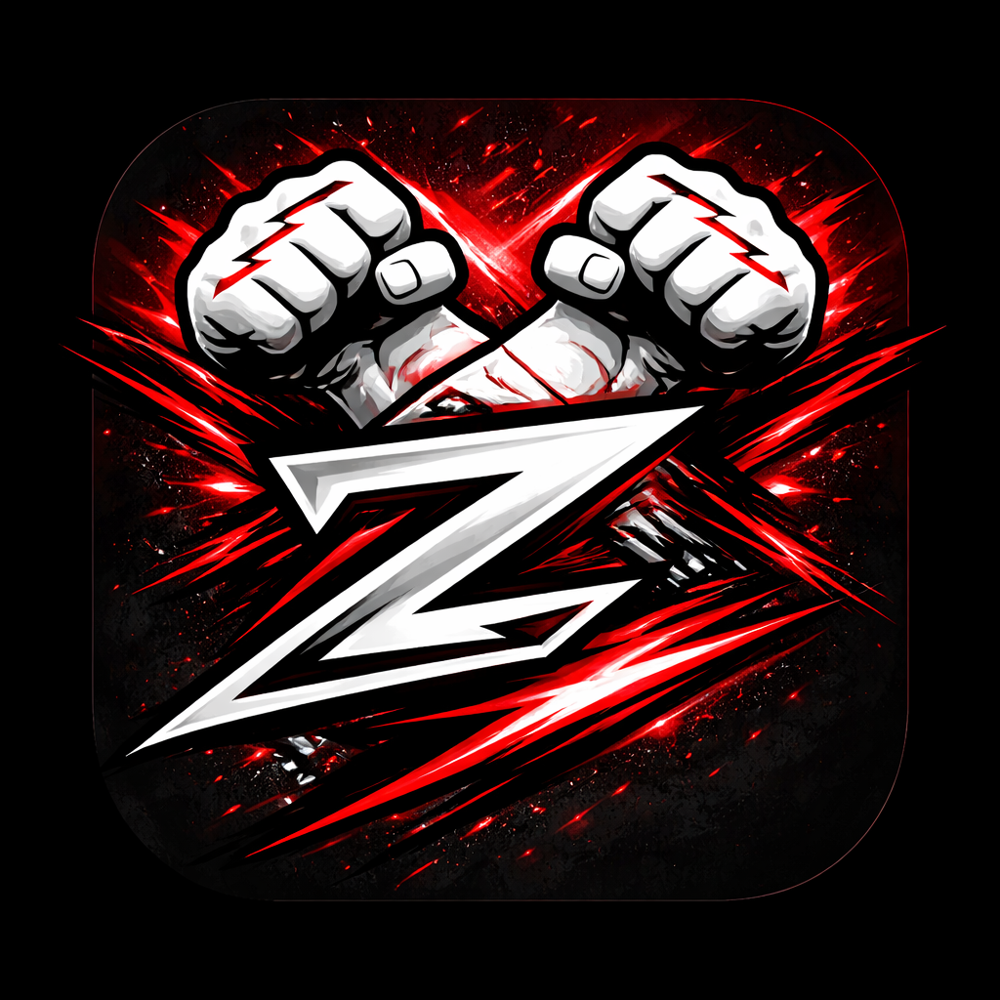

Workout Radio
High-energy music selected for gym sessions, cardio, and training days.

ZTIMEMUSIC FUELS MOVEMENTFIND YOUR STATION
ZTime Radio is designed to help you discover music for training, studying, traveling, relaxing, or simply keeping your day moving.
DISCOVER MUSIC
High-energy music selected for gym sessions, cardio, and training days.
Guitars, drums, and high-energy tracks for a heavier workout soundtrack.
Rhythm-driven tracks built around energy, confidence, and momentum.
A lower-key option for stretching, studying, recovery, or focused work.
FUTURE FEATURE
The ZTime vision includes browsing genres, discovering stations, and saving favorite stations so your music is ready whenever it is time to move.